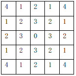

在国际象棋和中国象棋中，马的移动规则相同，都是走“日”字，我们将这种移动方式称为马步移动。如图所示，从标号为 $0$ 的点出发，可以经过一步马步移动达到标号为 $1$ 的点，经过两步马步移动达到标号为 $2$ 的点。任给平面上的两点 $p$ 和 $s$，它们的坐标分别为 $(x_p,y_p)$ 和 $(x_s,y_s)$，其中，$x_p$，$y_p$，$x_s$，$y_s$ 均为整数。从 $(x_p,y_p)$ 出发经过一步马步移动可以达到 $(x_{p+1},y_{p+2})$、$(x_{p+2},y_{p+1})$、$(x_{p+1},y_{p-2})$、$(x_{p+2},y_{p-1})$、$(x_{p-1},y_{p+2})$、$(x_{p-2},y_{p+1})$、$(x_{p-1},y_{p-2})$、$(x_{p-2},y_{p-1})$。假设棋盘充分大，并且坐标可以为负数。现在请你求出从点 $p$ 到点 $s$ 至少需要经过多少次马步移动？

 Comet OJ
Comet OJ